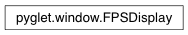

FPSDisplay Class¶
-
class
FPSDisplay(window)¶ Display of a window’s framerate.
This is a convenience class to aid in profiling and debugging. Typical usage is to create an FPSDisplay for each window, and draw the display at the end of the windows’ on_draw event handler:
window = pyglet.window.Window() fps_display = FPSDisplay(window) @window.event def on_draw(): # ... perform ordinary window drawing operations ... fps_display.draw()
The style and position of the display can be modified via the label attribute. Different text can be substituted by overriding the set_fps method. The display can be set to update more or less often by setting the update_period attribute.
Variables: label – The text label displaying the framerate. Attributes:
update_periodTime in seconds between updates.